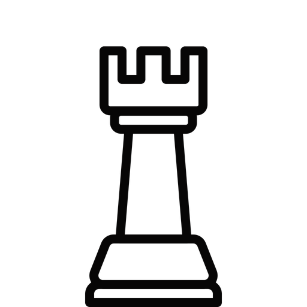
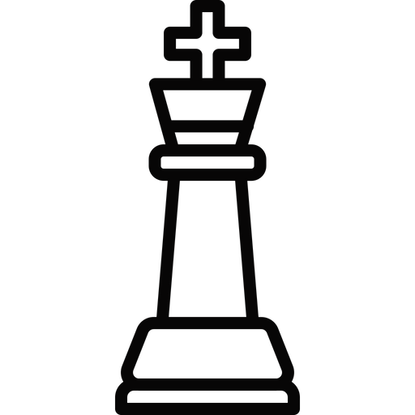
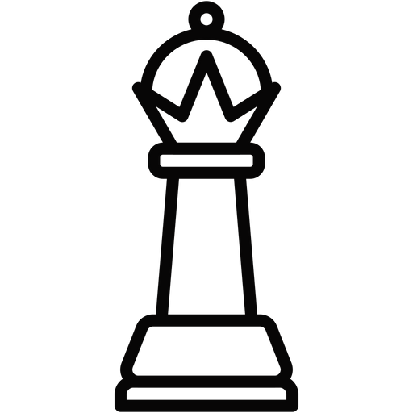

Xadrez
Xadrez, um jogo mental onde você controla um exército de peças a fim de tentar
derrotar o Rei inimigo.
Peão

O Peão é uma peça menor do xadrez ocidental. No início de uma partida,
cada jogador tem oito peças que são dispostas nas fileiras 2 para as brancas e 7 para as pretas.
O peão move-se verticalmente na coluna que encontra-se, sendo incapaz de recuar. No primeiro movimento,
a partir do ponto de partida, pode avançar duas casas e, a partir daí, uma.

Torre
A Torre é uma peça maior do xadrez, empregada usualmente na fase final
do jogo devido ao seu valor estratégico e tático, sendo amplamente estudada na
literatura sobre o enxadrismo. Seu valor relativo é de aproximadamente cinco pontos,
podendo variar em função de seu posicionamento em colunas ou fileiras abertas, ou formações
estratégicas como baterias.
Cavalo

O Cavalo é uma peça menor do xadrez ocidental de um valor aproximado de três peões.
Tem um movimento assemelhado a um "L" e, diferente das outras peças, pode pular as peças intervenientes.
Captura tomando a casa ocupada pela peça adversária, sendo sempre no final do L.
Bispo

O Bispo é uma peça menor do xadrez ocidental de valor aproximado de três peões.
Movimenta-se em diagonal, não podendo pular peças intervenientes, e captura tomando o lugar
ocupado pela peça adversária. Devido às características de seu movimento tem a deficiência da fraqueza
da cor onde seu movimento fica limitado à cor da casa de onde inicia a partida.
Rei
O Rei é a peça mais importante do xadrez ocidental, cuja captura é o único objetivo do jogo.
Nos países lusófonos, o rei é representado pela letra R na notação algébrica de xadrez.
Uma vez que não pode ser trocado durante uma partida, ele é considerado uma peça de valor inestimável.
Entretanto, alguns autores lhe atribuem de dois a quatro pontos de valor relativo, numa escala de um a dez,
baseando-se em sua mobilidade, segurança e no papel ativo que desempenha no final do jogo.
Rainha/Dama
A Dama ou Rainha é uma peça maior do jogo de xadrez, representada nos países lusófonos pela letra D
nas notações algébricas. É a peça de maior valor relativo do jogo, usualmente valorada entre nove e dez pontos.
Assim como a Torre, é capaz de, com o auxílio do seu Rei, vencer uma partida contra um Rei solitário. Por sua alta
mobilidade é a peça preferida do enxadrista iniciante.